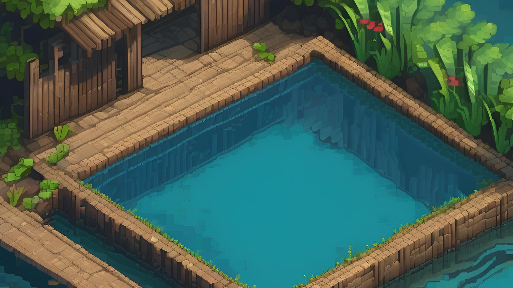

Energi

Inventory

Kayu: 0

Benih: 4
Blueprint: 0
Panel Surya: 0

Ikan: 0
📖 Panduan Permainan
🌱 1. Masuk ke Kebun

Tanam Pohon, Gunakan benih yang tersedia untuk mulai berkebun.
🛠️ 2. Halaman Craft

Buat item baru dengan mengumpulkan kayu dan bahan lainnya untuk crafting.
🎣 3. Masuk ke Kolam Ikan

Tangkap ikan sebagai sumber makanan tambahan untuk bertahan hidup.
🏠 4. Masuk ke Rumah

Dapatkan blue print untuk membuat kapal dan masak ikan